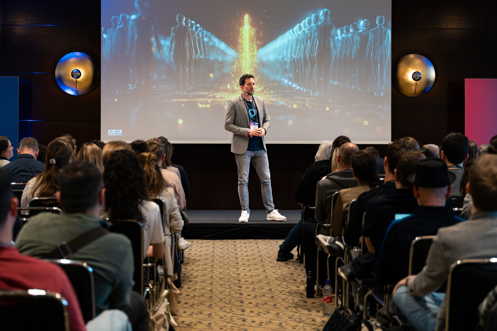
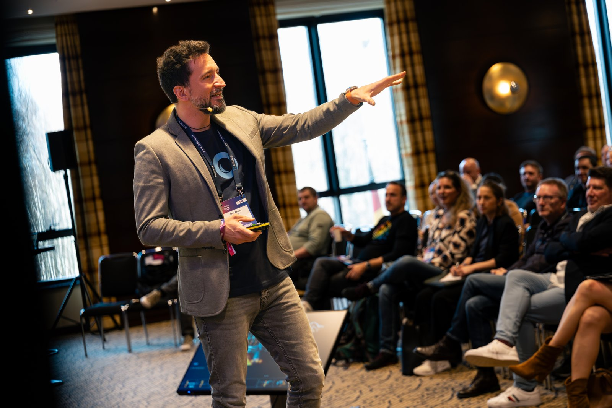
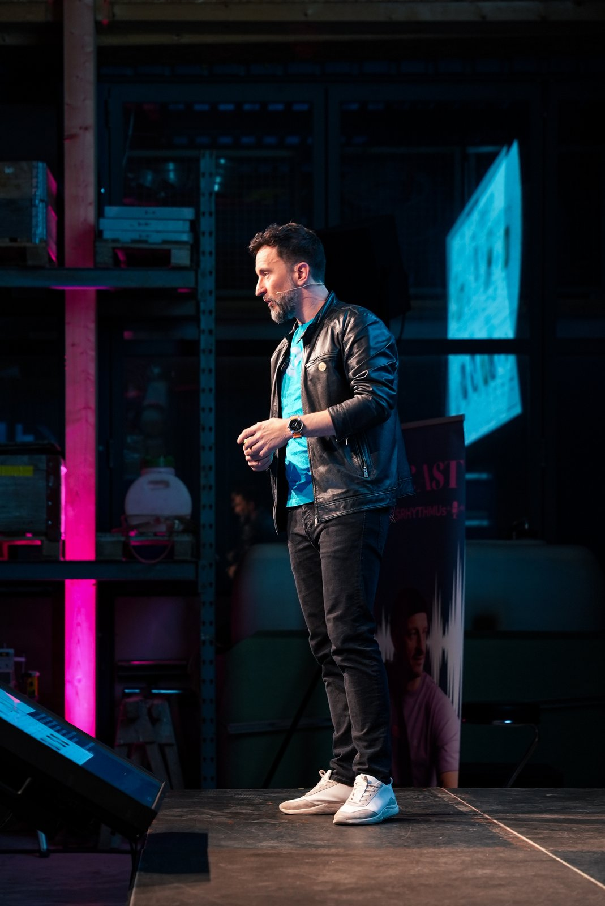
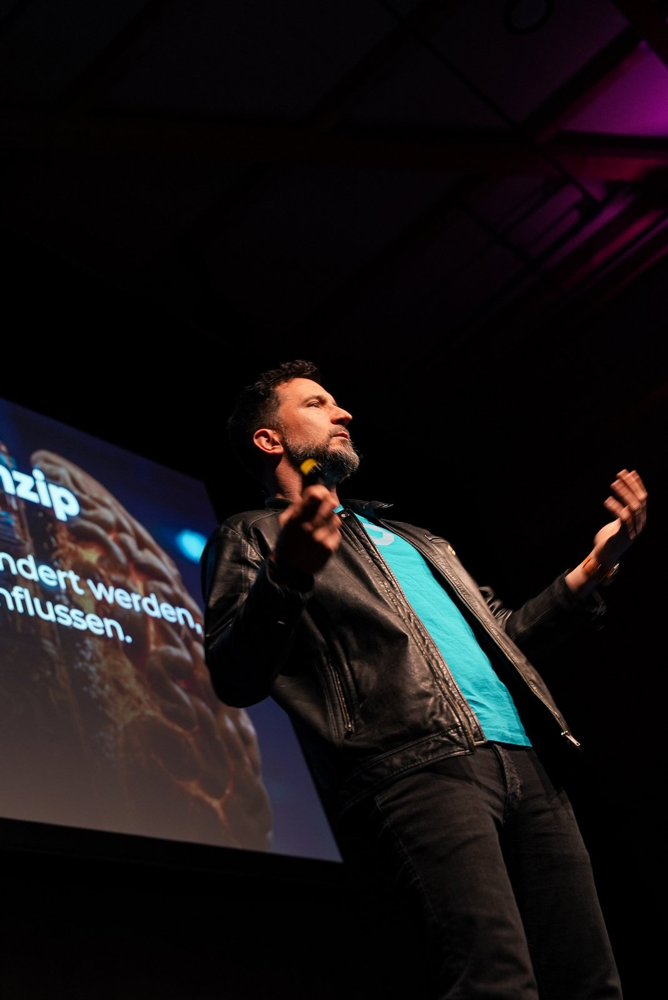

Kurzbeschrieb
Chris Beyeler ist KI-Stratege und Keynote Speaker, Gründer und CEO der BEYONDER AG und Präsident von swissAI, dem Schweizer Dachverband für Künstliche Intelligenz.
Alles für Medien, Veranstalter und Moderationen: Fotos in mehreren Formaten, Texte in drei Längen und ein Kurz-CV. Einzeln herunterladen, Text kopieren oder alles als ZIP (Texte und Fotos in Web-Auflösung).
Chris Beyeler ist KI-Stratege und Keynote Speaker, Gründer und CEO der BEYONDER AG und Präsident von swissAI, dem Schweizer Dachverband für Künstliche Intelligenz.
Text wird geladen …
Text wird geladen …
Text wird geladen …
Web: bis 1600 px, für Websites und Social Media. Druck: Originaldatei in voller Auflösung.




Nutzung: Fotos und Texte sind honorarfrei für redaktionelle Beiträge und Veranstaltungskommunikation rund um Chris Beyeler. Texte dürfen gekürzt werden.
Medienanfragen: E-Mail an BEYONDER · LinkedIn